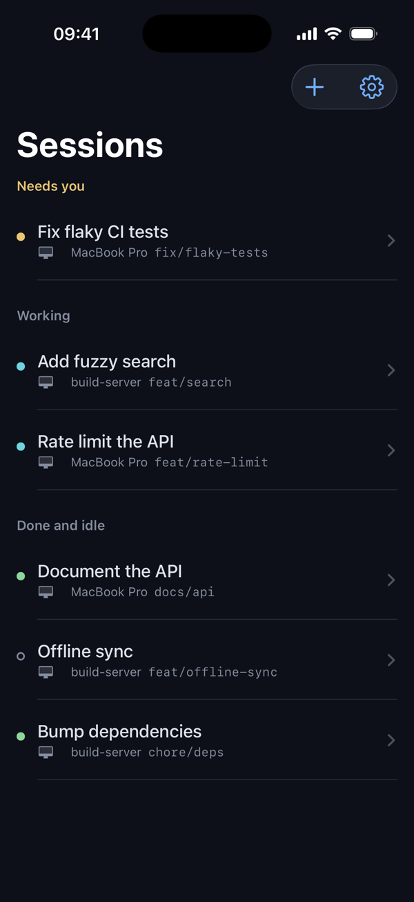
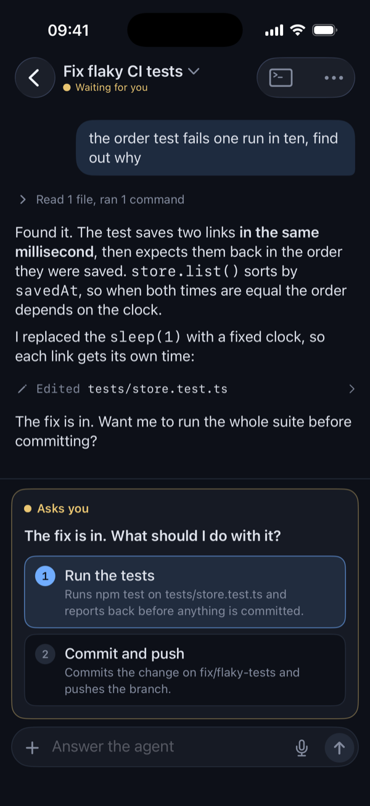

Farol Remote · Beta
Your coding agents, on your iPhone
See which Claude Code or Codex session needs you and answer it from your phone, away from your Mac.
iOS 17+, on TestFlight. Works with Farol for Mac and Linux servers. Free.


Every session in one list
Agents on your Macs and servers, side by side. Each row says which machine it runs on and whether the agent is working, waiting or done.
Answer with a tap
Approvals and questions show up as buttons. Tap one and the agent carries on.
Know when it needs you
A notification when an agent waits or finishes. Widgets and a Live Activity keep count while the app is closed.
More than yes or no
Reply with a slash command or a screenshot, look over the diff, or start a new session in any project.
The full terminal
Each session opens as the agent's conversation, with the real terminal one tap away when you need it.
Encrypted end to end
Only your Mac and your phone hold the keys. The relay between them passes messages along but can't read them.
Set it up
With Farol on your Mac
- Install Farol for iPhone from TestFlight.
- In Farol, open Settings → Remote and turn it on.
- Press Show code and scan it from the app.
On a server
Run your agents in tmux on a machine that stays on, and farol-host lets your phone answer them with the Mac closed.
curl -fsSL https://farol.sh/host.sh | shThen run farol-host setup and scan the code. The server shows up next to your Macs. More in the docs.
Questions
Can I use Claude Code from my phone?
Yes. Claude Code keeps running on your Mac or server, and Farol for iPhone shows its conversation, lets you answer its questions and approvals, and sends you a notification when it waits for you.
Does it work with Codex too?
Yes. Claude Code and Codex both report their status and show up as conversations. Any other agent in a Farol session or a tmux window is still there as a terminal.
Can the relay read my code?
No. Messages are encrypted on the Mac or server and decrypted on the phone. The relay only sees encrypted bytes, and for notifications, a push token and whether an agent is waiting or done. The security notes cover the details.
Does my Mac need to stay on?
Yes, the agents run there. Farol can keep the Mac awake while an agent works or waits. To close the laptop, run your agents on a server with farol-host.
Is there an Android app?
Not yet. Remote is iPhone only for now. If you'd use it on Android or the web, say so on GitHub or Discord.
Is it free?
Yes, the iPhone app is free. Farol for Mac, the relay, the encryption and farol-host are open source under the MIT license.